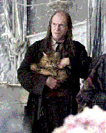

Te adentras en la oscuridad de la galería, donde el aire es helado y huele a humedad antigua. De repente, tu sangre se hiela al escuchar el inconfundible sonido de unos pasos arrastrados y un maullido agudo. Argus Filch y la Señora Norris se acercan rápidamente por el frente. ¡Tienes que actuar rápido!
El pánico se apodera de ti. ¿Decides esconderte dentro de una armadura vacía o prefieres encender tu varita gritando "¡Lumos!" y correr hacia lo desconocido?